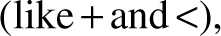
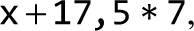
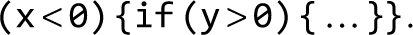
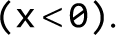
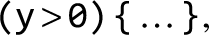
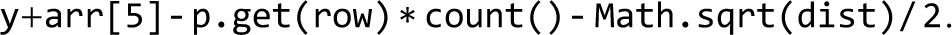

Neither can embellishments of language be found without arrangement and expression of thoughts, nor can thoughts be made to shine without the light of language.
—Cicero (106–43 B.C.)
The previous chapter introduced Jack—a simple, object-based programming language with a Java-like syntax. In this chapter we start building a compiler for the Jack language. A compiler is a program that translates programs from a source language into a target language. The translation process, known as compilation, is conceptually based on two distinct tasks. First, we have to understand the syntax of the source program and, from it, uncover the program’s semantics. For example, the parsing of the code can reveal that the program seeks to declare an array or manipulate an object. Once we know the semantics, we can reexpress it using the syntax of the target language. The first task, typically called syntax analysis, is described in this chapter; the second task—code generation—is taken up in the next chapter.
How can we tell that a compiler is capable of “understanding” programs? Well, as long as the code generated by the compiler is doing what it’s supposed to be doing, we can optimistically assume that the compiler is operating properly. Yet in this chapter we build only the syntax analyzer module of the compiler, with no code generation capabilities. If we wish to unit-test the syntax analyzer in isolation, we have to contrive a way to demonstrate that it understands the source program. Our solution is to have the syntax analyzer output an XML file whose marked-up content reflects the syntactic structure of the source code. By inspecting the generated XML output, we’ll be able to ascertain that the analyzer is parsing input programs correctly.
Writing a compiler from the ground up is an exploit that brings to bear several fundamental topics in computer science. It requires the use of parsing and language translation techniques, application of classical data structures like trees and hash tables, and use of recursive compilation algorithms. For all these reasons, writing a compiler is also a challenging feat. However, by splitting the compiler’s construction into two separate projects (actually four, counting chapters 7 and 8 as well) and by allowing the modular development and unit-testing of each part in isolation, we turn the compiler’s development into a manageable and self-contained activity.
Why should you go through the trouble of building a compiler? Aside from the benefits of feeling competent and accomplished, a hands-on grasp of compilation internals will turn you into a better high-level programmer. Further, the same rules and grammars used for describing programming languages are also used in diverse fields like computer graphics, communications and networks, bioinformatics, machine learning, data science, and blockchain technology. And, the vibrant area of natural language processing—the enabling science and practice behind intelligent chatbots, robotic personal assistants, language translators, and many artificial intelligence applications—requires abilities for analyzing texts and synthesizing semantics. Thus, while most programmers don’t develop compilers in their regular jobs, many programmers have to parse and manipulate texts and data sets of complex and varying structures. These tasks can be done efficiently and elegantly using the algorithms and techniques described in this chapter.
We start with a Background section that surveys the minimal set of concepts necessary for building a syntax analyzer: lexical analysis, context-free grammars, parse trees, and recursive descent parsing algorithms. This sets the stage for a Specification section that presents the Jack language grammar and the output that a Jack analyzer is expected to generate. The Implementation section proposes a software architecture for constructing a Jack analyzer, along with a suggested API. As usual, the Project section gives step-by-step instructions and test programs for building a syntax analyzer. In the next chapter, this analyzer will be extended into a full-scale compiler.
Compilation consists of two main stages: syntax analysis and code generation. The syntax analysis stage is usually divided further into two substages: tokenizing, the grouping of input characters into language atoms called tokens, and parsing, the grouping of tokens into structured statements that have a meaning.
The tokenizing and parsing tasks are completely independent of the target language into which we seek to translate the source input. Since in this chapter we don’t deal with code generation, we have chosen to have the syntax analyzer output the parsed structure of the input program as an XML file. This decision has two benefits. First, the output file can be readily inspected, demonstrating that the syntax analyzer is parsing source programs correctly. Second, the requirement to output this file explicitly forces us to write the syntax analyzer in an architecture that can be later morphed into a full-scale compiler. Indeed, as figure 10.1 shows, in the next chapter we will extend the syntax analyzer developed in this chapter into a full-scale compilation engine capable of generating executable VM code rather than passive XML code.
Figure 10.1 Staged development plan of the Jack compiler.
In this chapter we focus only on the syntax analyzer module of the compiler, whose job is understanding the structure of a program. This notion needs explanation. When humans read the source code of a computer program, they can immediately relate to the program’s structure. They can do so since they have a mental image of the language’s grammar. In particular, they sense which program constructs are valid, and which are not. Using this grammatical insight, humans can identify where classes and methods begin and end, what are declarations, what are statements, what are expressions and how they are built, and so on. In order to recognize these language constructs, which may well be nested, humans recursively map them on the range of textual patterns accepted by the language grammar.
Syntax analyzers can be developed to perform similarly by building them according to a given grammar—the set of rules that define the syntax of a programming language. To understand—parse—a given program means to determine the exact correspondence between the program’s text and the grammar’s rules. To do so, we must first transform the program’s text into a list of tokens, as we now turn to describe.
Each programming language specification includes the types of tokens, or words, that the language recognizes. In the Jack language, tokens fall into five categories: keywords (like class and while), symbols  integer constants (like 17 and 314), string constants (like "FAQ" and "Frequently Asked Questions"), and identifiers, which are the textual labels used for naming variables, classes, and subroutines. Taken together, the tokens defined by these lexical categories can be referred to as the language lexicon.
In its plainest form, a computer program is a stream of characters stored in a text file. The first step in analyzing the program’s syntax is grouping the characters into tokens, as defined by the language lexicon, while ignoring white space and comments. This task is called lexical analysis, scanning, or tokenizing—all meaning exactly the same thing.
Once a program has been tokenized, the tokens, rather than the characters, are viewed as its basic atoms. Thus, the token stream becomes the compiler’s main input.
Figure 10.2 presents the Jack language lexicon and illustrates the tokenization of a typical code segment. This version of the tokenizer outputs the tokens as well as their lexical classifications.
Figure 10.2 Definition of the Jack lexicon, and lexical analysis of a sample input.
Tokenizing is a simple and important task. Given a language lexicon, it is not difficult to write a program that turns any given character stream into a stream of tokens. This capability provides the first stepping stone toward developing a syntax analyzer.
Once we develop the ability to access a given text as a stream of tokens, or words, we can proceed to attempt grouping the words into valid sentences. For example, when we hear that “Bob got the job” we nod approvingly, while inputs like “Got job the Bob” or “Job Bob the got” sound weird. We perform these parsing tasks without thinking about them, since our brains have been trained to map sequences of words on patterns that are either accepted or rejected by the English grammar. The grammars of programming languages are much simpler than those of natural languages. See figure 10.3 for an example.
Figure 10.3 A subset of the Jack language grammar, and Jack code segments that are either accepted or rejected by the grammar.
A grammar is written in a meta-language: a language describing a language. Compilation theory is rife with formalisms for specifying, and reasoning about, grammars, languages, and meta-languages. Some of these formalisms are, well, painfully formal. Trying to keep things simple, in Nand to Tetris we view a grammar as a set of rules. Each rule consists of a left side and a right side. The left side specifies the rule’s name, which is not part of the language. Rather, it is made up by the person who describes the grammar, and thus it is not terribly important. For example, if we replace a rule’s name with another name throughout the grammar, the grammar will be just as valid (though it may be less readable).
The rule’s right side describes the lingual pattern that the rule specifies. This pattern is a left-to-right sequence consisting of three building blocks: terminals, nonterminals, and qualifiers. Terminals are tokens, nonterminals are names of other rules, and qualifiers are represented by the five symbols |, *, ?, (, and). Terminal elements, like 'if', are specified in bold font and enclosed within single quotation marks; nonterminal elements, like expression, are specified using italic font; qualifiers are specified using regular font. For example, the rule ifStatement: 'if' '(' expression ')' '{' statements '}' stipulates that every valid instance of an ifStatement must begin with the token if, followed by the token (, followed by a valid instance of an expression (defined elsewhere in the grammar), followed by the token), followed by the token {, followed by a valid instance of statements (defined elsewhere in the grammar), followed by the token}.
When there is more than one way to parse a pattern, we use the qualifier | to list the alternatives. For example, the rule statement: letStatement | ifStatement | whileStatement stipulates that a statement can be either a letStatement, an ifStatement, or a whileStatement.
The qualifier * is used to denote “0, 1, or more times.” For example, the rule statements: statement* stipulates that statements stands for 0, 1, or more instances of statement. In a similar vein, the qualifier ? is used to denote “0 or 1 times.” For example, the rule expression: term (op term)? stipulates that expression is a term that may or may not be followed by the sequence op term. This implies that, for example, x is an expression, and so are  and The qualifiers (and) are used for grouping grammar elements. For example, (op term) stipulates that, in the context of this rule, op followed by term should be treated as one grammatical element.
Grammars are inherently recursive. Just like the sentence “Bob got the job that Alice offered” is considered valid, so is the statement if  How can we tell that this input is accepted by the grammar? After getting the first token and realizing that we have an if pattern, we focus on the rule ifStatement: 'if' '(' expression ')' '{' statements '}'. The rule informs that following the token if there ought to be the token (, followed by an expression, followed by the token). And indeed, these requirements are satisfied by the input element  Back to the rule, we see that we now have to anticipate the token {, followed by statements, followed by the token}. Now, statements is defined as 0 or more instances of statement, and statement, in turn, is either a letStatement, an ifStatement, or a whileStatement. This expectation is met by the inner input element if  which is an ifStatement.
We see that the grammar of a programming language can be used to ascertain, without ambiguity, whether given inputs are accepted or rejected.1 As a side effect of this parsing act, the parser produces an exact correspondence between the given input, on the one hand, and the syntactic patterns admitted by the grammar rules, on the other. The correspondence can be represented by a data structure called a parse tree, also called a derivation tree, like the one shown in figure 10.4a. If such a tree can be constructed, the parser renders the input valid; otherwise, it can report that the input contains syntax errors.
Figure 10.4a Parse tree of a typical code segment. The parsing process is driven by the grammar rules.
How can we represent parse trees textually? In Nand to Tetris, we decided to have the parser output an XML file whose marked-up format reflects the tree structure. By inspecting this XML output file, we can ascertain that the parser is parsing the input correctly. See figure 10.4b for an example.
Figure 10.4b Same parse tree, in XML.
A parser is an agent that operates according to a given grammar. The parser accepts as input a stream of tokens and attempts to produce as output the parse tree associated with the given input. In our case, the input is expected to be structured according to the Jack grammar, and the output is written in XML. Note, though, that the parsing techniques that we now turn to describe are applicable to handling any programming language and structured file format.
There are several algorithms for constructing parse trees. The top-down approach, also known as recursive descent parsing, attempts to parse the tokenized input recursively, using the nested structures admitted by the language grammar. Such an algorithm can be implemented as follows. For every nontrivial rule in the grammar, we equip the parser program with a routine designed to parse the input according to that rule. For example, the grammar listed in figure 10.3 can be implemented using a set of routines named compileStatement, compileStatements, compileLet, compileIf, …, compileExpression, and so on. We use the action verb compile rather than parse, since in the next chapter we will extend this logic into a full-scale compilation engine.
The parsing logic of each compilexxx routine should follow the syntactic pattern specified by the right side of the xxx rule. For example, let us focus on the rule whileStatement: 'while' '(' expression ')' '{' statements '}'. According to our scheme, this rule will be implemented by a parsing routine named compileWhile. This routine should realize the left-to-right derivation logic specified by the pattern 'while' '(' expression ')' '{' statements '}'. Here is one way to implement this logic, using pseudocode:
This parsing process will continue until the expression and statements parts of the while statement have been fully parsed. Of course the statements part may well contain a lower-level while statement, in which case the parsing will continue recursively.
The example just shown illustrates the implementation of a relatively simple rule, whose derivation logic entails a simple case of straight-line parsing. In general, grammar rules can be more complex. For example, consider the following rule, which specifies the definition of class-level static and instance-level field variables in the Jack language:
This rule presents two parsing challenges that go beyond straight-line parsing. First, the rule admits either static or field as its first token. Second, the rule admits multiple variable declarations. To address both issues, the implementation of the corresponding compileClassVarDec routine can (i) handle the processing of the first token (static or field) directly, without calling a helper routine, and (ii) use a loop for handling all the variable declarations that the input contains. Generally speaking, different grammar rules entail slightly different parsing implementations. At the same time, they all follow the same contract: each compilexxx routine should get from the input, and handle, all the tokens that make up xxx, advance the tokenizer exactly beyond these tokens, and output the parse tree of xxx.
Recursive parsing algorithms are simple and elegant. If the language is simple, a single token lookahead is all that it takes to know which parsing rule to invoke next. For example, if the current token is let, we know that we have a letStatement; if the current token is while, we know that we have a whileStatement, and so on. Indeed, in the simple grammar shown in figure 10.3, looking ahead one token suffices to resolve, without ambiguity, which rule to use next. Grammars that have this lingual property are called LL (1). These grammars can be handled simply and elegantly by recursive descent algorithms, without backtracking.
The term LL comes from the observation that the grammar parses the input from left to right, performing leftmost derivation of the input. The (1) parameter informs that looking ahead 1 token is all that it takes to know which parsing rule to invoke next. If that token does not suffice to resolve which rule to use, we can look ahead one more token. If this lookahead settles the ambiguity, the parser is said to be LL (2). And if not, we can look ahead yet another token, and so on. Clearly, as we need to look ahead further and further down the token stream, things become complicated, requiring a sophisticated parser.
The complete Jack language grammar, which we now turn to present, is LL (1), barring one exception that can be easily handled. Thus, Jack lends itself nicely to a recursive descent parser, which is the centerpiece of project 10.
This section consists of two parts. First, we specify the Jack language’s grammar. Next, we specify a syntax analyzer designed to parse programs according to this grammar.
The functional specification of the Jack language presented in chapter 9 was aimed at Jack programmers; we now give a formal specification of the Jack language, aimed at developers of Jack compilers. The language specification, or grammar, uses the following notation:
With this notation in mind, the complete Jack grammar is specified in figure 10.5.
Figure 10.5 The Jack grammar.
A syntax analyzer is a program that performs both tokenizing and parsing. In Nand to Tetris, the main purpose of the syntax analyzer is to process a Jack program and understand its syntactic structure according to the Jack grammar. By understanding we mean that the syntax analyzer must know, at each point in the parsing process, the structural identity of the program element that it is currently handling, that is, whether it is an expression, a statement, a variable name, and so on. The syntax analyzer must possess this syntactic knowledge in a complete recursive sense. Without it, it will be impossible to move on to code generation—the ultimate goal of the compilation process.
Usage: The syntax analyzer accepts a single command-line argument, as follows,
prompt> JackAnalyzer source
where source is either a file name of the form Xxx.jack (the extension is mandatory) or the name of a folder (in which case there is no extension) containing one or more .jack files. The file/folder name may contain a file path. If no path is specified, the analyzer operates on the current folder. For each Xxx.jack file, the parser creates an output file Xxx.xml and writes the parsed output into it. The output file is created in the same folder as that of the input. If there is a file by this name in the folder, it will be overwritten.
Input: An Xxx.jack file is a stream of characters. If the file represents a valid program, it can be tokenized into a stream of valid tokens, as specified by the Jack lexicon. The tokens may be separated by an arbitrary number of space characters, newline characters, and comments, which are ignored. There are three possible comment formats: /* comment until closing */, /** API comment until closing */, and // comment until the line’s end.
Output: The syntax analyzer emits an XML description of the input file, as follows. For each terminal element (token) of type xxx appearing in the input, the syntax analyzer prints the marked-up output <xxx> token </xxx>, where xxx is one of the tags keyword, symbol, integerConstant, stringConstant, or identifier, representing one of the five token types recognized by the Jack language. Whenever a nonterminal language element xxx is detected, the syntax analyzer handles it using the following pseudocode:
where xxx is one of the following (and only the following) tags: class, classVarDec, subroutineDec, parameterList, subroutineBody, varDec, statements, letStatement, ifStatement, whileStatement, doStatement, returnStatement, expression, term, expressionList.
To simplify things, the following Jack grammar rules are not accounted for explicitly in the XML output: type, className, subroutineName, varName, statement, subroutineCall. We will explain this further in the next section, when we discuss the architecture of our compilation engine.
The previous section specified what a syntax analyzer should do, with few implementation insights. This section describes how to build such an analyzer. Our proposed implementation is based on three modules:
In the next chapter we will extend this software architecture with two additional modules that handle the language’s semantics: a symbol table and a VM code writer. This will complete the construction of a full-scale compiler for the Jack language. Since the main module that drives the parsing process in this project will end up driving the overall compilation process as well, we name it CompilationEngine.
This module ignores all comments and white space in the input stream and enables accessing the input one token at a time. Also, it parses and provides the type of each token, as defined by the Jack grammar.
The CompilationEngine is the backbone module of both the syntax analyzer described in this chapter and the full-scale compiler described in the next chapter. In the syntax analyzer, the compilation engine emits a structured representation of the input source code wrapped in XML tags. In the compiler, the compilation engine will instead emit executable VM code. In both versions, the parsing logic and API presented below are exactly the same.
The compilation engine gets its input from a JackTokenizer and emits its output to an output file. The output is generated by a series of compilexxx routines, each designed to handle the compilation of a specific Jack language construct xxx. The contract between these routines is that each compilexxx routine should get from the input, and handle, all the tokens that make up xxx, advance the tokenizer exactly beyond these tokens, and output the parsing of xxx. As a rule, each compilexxx routine is called only if the current token is xxx.
Grammar rules that have no corresponding compilexxx routines: type, className, subroutineName, varName, statement, subroutineCall. We introduced these rules to make the Jack grammar more structured. As it turns out, the parsing logic of these rules is better handled by the routines that implement the rules that refer to them. For example, instead of writing a compileType routine, whenever type is mentioned in some rule xxx, the parsing of the possible types should be done directly by the compile xxx routine.
Token lookahead: Jack is almost an LL(1) language: the current token is sufficient for determining which CompilationEngine routine to call next. The only exception occurs when parsing a term, which occurs only when parsing an expression. To illustrate, consider the contrived yet valid expression This expression is made up of six terms: the variable y, the array element arr[5], the method call on the p object p.get (row), the method call on the this object count (), the call to the function (static method) Math.sqrt(dist), and the constant 2.
Suppose that we are parsing this expression and the current token is one of the identifiers y, arr, p, count, or Math. In each one of these cases, we know that we have a term that begins with an identifier, but we don’t know which parsing possibility to follow next. That’s the bad news; the good news is that a single lookahead to the next token is all that we need to settle the dilemma.
The need for this irregular lookahead operation occurs in the CompilationEngine twice: when parsing a term, which happens only when parsing an expression, and when parsing a subroutineCall. Now, an inspection of the Jack grammar shows that subroutineCall appears in two places only: either in a do subroutineCall statement or in a term.
With that in mind, we propose parsing do subroutineCall statements as if their syntax were do expression. This pragmatic recommendation obviates the need to write the irregular lookahead code twice. It also implies that the parsing of subroutineCall can now be handled directly by the compileTerm routine. In short, we’ve localized the need to write the irregular token lookahead code to one routine only, compileTerm, and we’ve eliminated the need for a compileSubroutineCall routine.
The compileExpressionList routine: returns the number of expressions in the list. The return value is necessary for generating VM code, as we’ll see when we’ll complete the compiler’s development in project 11. In this project we generate no VM code; therefore the returned value is not used and can be ignored by routines that call compileExpressionList.
This is the main program that drives the overall syntax analysis process, using the services of a JackTokenizer and a CompilationEngine. For each source Xxx.jack file, the analyzer
We provide no API for this module, inviting you to implement it as you see fit. Remember that the first routine that must be called when compiling a .jack file is compileClass.
Objective: Build a syntax analyzer that parses Jack programs according to the Jack grammar. The analyzer’s output should be written in XML, as specified in section 10.2.2.
This version of the syntax analyzer assumes that the source Jack code is error-free. Error checking, reporting, and handling can be added to later versions of the analyzer but are not part of project 10.
Resources: The main tool in this project is the programming language that you will use for implementing the syntax analyzer. You will also need the supplied TextComparer utility. This program allows comparing files while ignoring white space. This will help you compare the output files generated by your analyzer with the supplied compare files. You may also want to inspect these files using an XML viewer. Any standard web browser should do the job—just use your browser’s “open file” option to open the XML file that you wish to inspect.
Contract: Write a syntax analyzer for the Jack language, and test it on the supplied test files. The XML files produced by your analyzer should be identical to the supplied compare files, ignoring white space.
Test files: We provide several .jack files for testing purposes. The projects/10/Square program is a three-class app that enables moving a black square around the screen using the keyboard’s arrow keys. The projects/10/ArrayTest program is a single-class app that computes the average of a user-supplied sequence of integers using array processing. Both programs were discussed in chapter 9, so they should be familiar. Note, though, that we made some harmless changes to the original code to make sure that the syntax analyzer will be fully tested on all aspects of the Jack language. For example, we’ve added a static variable to projects/10/Square/Main.jack, as well as a function named more, which are never used or called. These changes allow testing how the analyzer handles language elements that don’t appear in the original Square and ArrayTest files, like static variables, else, and unary operators.
Development plan: We suggest developing and unit-testing the analyzer in four stages:
We provide input .jack files and compare .xml files for unit-testing each one of the four stages, as we now turn to describe.
Implement the JackTokenizer module specified in section 10.3. Test your implementation by writing a basic version of the JackAnalyzer, defined as follows. The analyzer, which is the main program, is invoked using the command JackAnalyzer source, where source is either a file name of the form Xxx.jack (the extension is mandatory) or a folder name (in which case there is no extension). In the latter case, the folder contains one or more .jack files and, possibly, other files as well. The file/folder name may include a file path. If no path is specified, the analyzer operates on the current folder.
The analyzer handles each file separately. In particular, for each Xxx.jack file, the analyzer constructs a JackTokenizer for handling the input and an output file for writing the output. In this first version of the analyzer, the output file is named XxxT.xml (where T stands for tokenized output). The analyzer then enters a loop to advance and handle all the tokens in the input file, one token at a time, using the JackTokenizer methods. Each token should be printed in a separate line, as <tokenType> token </tokenType>, where tokenType is one of five possible XML tags coding the token’s type. Here is an example:
Note that in the case of string constants, the program ignores the double quotation marks. This requirement is by design.
The generated output has two trivial technicalities dictated by XML conventions. First, an XML file must be enclosed within some begin and end tags; this convention is satisfied by the <tokens> and </tokens> tags. Second, four of the symbols used in the Jack language (<, >, ", &) are also used for XML markup; thus they cannot appear as data in XML files. Following convention, the analyzer represents these symbols as <, >, ", and &, respectively. For example, when the parser encounters the < symbol in the input file, it outputs the line <symbol> < </symbol>. This so-called escape sequence is rendered by XML viewers as <symbol> < </symbol>, which is what we want.
The next version of your syntax analyzer should be capable of parsing every element of the Jack language, except for expressions and array-oriented commands. To that end, implement the CompilationEngine module specified in section 10.3, except for the routines that handle expressions and arrays. Test the implementation by using your Jack analyzer, as follows.
For each Xxx.jack file, the analyzer constructs a JackTokenizer for handling the input and an output file for writing the output, named Xxx.xml. The analyzer then calls the compileClass routine of the CompilationEngine. From this point onward, the CompilationEngine routines should call each other recursively, emitting XML output similar to the one shown in figure 10.4b.
Unit-test this version of your JackAnalyzer by applying it to the folder ExpressionlessSquare. This folder contains versions of the files Square.jack, SquareGame.jack, and Main.jack, in which each expression in the original code has been replaced with a single identifier (a variable name in scope). For example:
Note that the replacement of expressions with variables results in nonsensical code. This is fine, since the program semantics is irrelevant to project 10. The nonsensical code is syntactically correct, and that’s all that matters for testing the parser. Note also that the original and expressionless files have the same names but are located in separate folders.
Use the supplied TextComparer utility to compare the output files generated by your JackAnalyzer with the supplied .xml compare files.
Next, complete the CompilationEngine routines that handle expressions, and test them by applying your JackAnalyzer to the Square folder. Finally, complete the routines that handle arrays, and test them by applying your JackAnalyzer to the ArrayTest folder.
A web-based version of project 10 is available at www
Although it is convenient to describe the structure of computer programs using parse trees and XML files, it’s important to understand that compilers don’t necessarily have to maintain such data structures explicitly. For example, the parsing algorithm described in this chapter parses the input as it reads it and does not keep the entire input program in memory. There are essentially two types of strategies for doing such parsing. The simpler strategy works top-down, and that is the one presented in this chapter. The more advanced parsing algorithms, which work bottom-up, were not described here since they require elaboration of more compilation theory.
Indeed, in this chapter we have sidestepped the formal language theory studied in typical compilation courses. Also, we have chosen a simple syntax for the Jack language—a syntax that can be easily compiled using recursive descent techniques. For example, the Jack grammar does not mandate the usual operator precedence in algebraic expressions evaluation, like multiplication before addition. This enabled us to avoid parsing algorithms that are more powerful, but also more intricate, than the elegant top-down parsing techniques presented in this chapter.
Every programmer experiences the disgraceful handling of compilation errors, which is typical of many compilers. As it turns out, error diagnostics and reporting are a challenging problem. In many cases, the impact of an error is detected several or many lines of code after the error was made. Therefore, error reporting is sometimes cryptic and unfriendly. Indeed, one aspect in which compilers vary greatly is their ability to diagnose, and help debug, errors. To do so, compilers persist parts of the parse tree in memory and extend the tree with annotations that help pinpoint the source of errors and backtrack the diagnostic process, as needed. In Nand to Tetris we bypass all these extensions, assuming that the source files that the compiler handles are error-free.
Another topic that we hardly mentioned is how the syntax and semantics of programming languages are studied in computer and cognitive science. There is a rich theory of formal and natural languages that discusses properties of classes of languages, as well as meta-languages and formalisms for specifying them. This is also the place where computer science meets the study of human languages, leading to the vibrant areas of research and practice known as computational linguistics and natural language processing.
Finally, it is worth mentioning that syntax analyzers are typically not standalone programs and are rarely written from scratch. Instead, programmers usually build tokenizers and parsers using a variety of compiler generator tools like LEX (for LEXical analysis) and YACC (for Yet Another Compiler Compiler). These utilities receive as input a context-free grammar and produce as output syntax analysis code capable of tokenizing and parsing programs written in that grammar. The generated code can then be customized to fit the specific needs of the compiler writer. Following the “show me” spirit of Nand to Tetris, though, we have chosen not to use such black boxes in the implementation of our compiler, but rather build everything from the ground up.
1. And here lies a crucial difference between programming languages and natural languages. In natural languages, we can say things like “Whoever saves one life, saves the world entire.” In the English language, putting the adjective after the noun is grammatically incorrect. Yet, in this particular case, it sounds perfectly acceptable. Unlike programming languages, natural languages mandate a poetic license to break grammar rules, so long as the writer knows what he or she is doing. This freedom of expression makes natural languages infinitely rich.